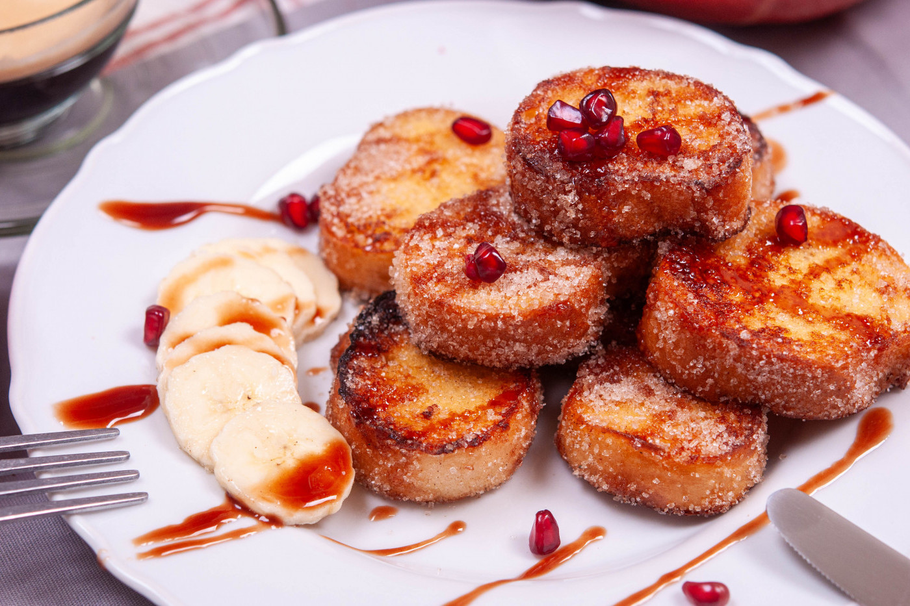

Всички обичаме палачинки, бухтички и мекици, но обичаме да пробваме и нови рецепти за закуска. Канелените мини пържени филийки внасят разнообразие в менюто. Освен, че се приготвят лесно и бързо, те са и много симпатични на вид. И освен, че са перфектни за закуска, те са идеални и за десерт. Спокойно можете да ги комбинирате с любимото сладко, с течен шоколад или пък с пресни продове.
📖
Лесна
⏱️
15 мин.
🍴
4